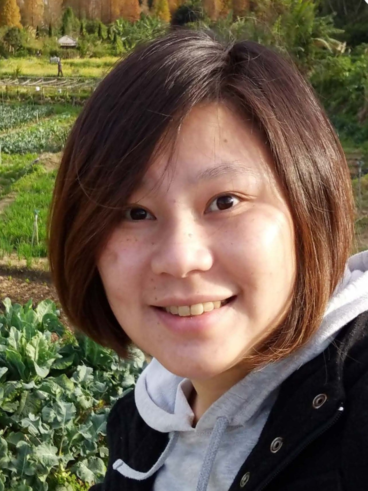

人本 AI 教育
讓學員提問、建造、測試、解釋與反思，而不是只看工具示範。
關於 Pecu
我是蔡芸琤（Yun-Cheng (Pecu) Tsai, Ph.D.），一位 AI 教育者、應用研究者、母親與專案實作者，與家人居住於美國西雅圖地區。
我的工作橫跨 AI 與資料教育、醫療決策支援、金融建模、可解釋系統、新興科技與跨領域專案。共同問題不只是模型是否有效，而是人能否理解證據、負責任地使用成果並繼續推進。

四項核心能力
讓學員提問、建造、測試、解釋與反思，而不是只看工具示範。
處理醫療與決策支援中的可解釋性、隱私、不確定性與人類覆核。
把共同挑戰轉成角色、里程碑、文件、證據與下一步決策。
串連資料、可重現實驗、模型比較、評估與可解釋報告。
我的信念
我把研究、課程設計與專案實作連在一起，讓學習者與組織能在真實情境中理解 AI、測試想法並累積成果。
每次合作都重視充分準備、清楚責任與具體回饋。目標是留下能持續運用的方法，讓參與者有能力自行判斷與行動。
也透過公共資源與合作夥伴拓展參與機會，讓教育品質與長期支持一起成長。
研究與國際服務
研究涵蓋 AI 教育、醫療 AI、金融視覺與強化學習、災害資料、區塊鏈、量子輔助模型與自動化。
近期國際程序委員會服務包括 QUANCOM 2026、ICCCN 2026 量子機器學習工作坊、QNRL@WCCI 2026、GCCCE 2026 與 ITiCSE 2025。
學術職務與國際服務用於說明背景，不表示相關機構為 PECULAB 背書。
精選國際服務
近期國際研究與跨領域社群服務包括：
上述角色用於說明專業服務，不表示相關會議或組織機構為 PECULAB 背書。
為什麼成立 PECULAB
PECULAB 讓我能清楚界定範圍、做出負責任的承諾、進行跨國合作，並對交付成果承擔責任。這不表示目前或過往任職的公司、大學、企業與專案夥伴為 PECULAB 的商業服務背書。
提出課程或專案合作